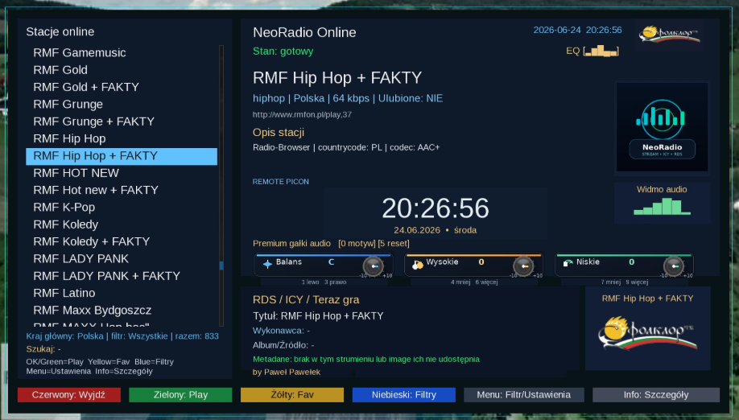
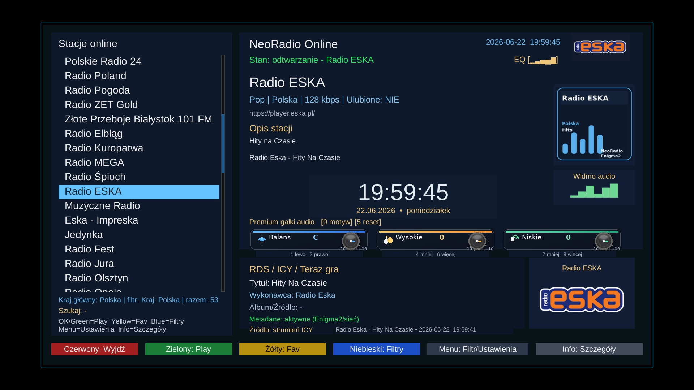

Witam na mojej stronie Paweł Pawełek
Radio internetowe online
NeoRadio v2.1
Poprawiona wersja NeoRadio dla Enigma2. Wtyczka nie opiera się już na starej bazie zapisanej na stałe — działa teraz w trybie Radio-Browser Online i pobiera aktualną listę stacji z serwera.

Do czego służy
NeoRadio v2.1 to radio internetowe dla Enigma2 z aktualną bazą stacji online, wyborem kraju i wygodnym odtwarzaniem bez ręcznego dopisywania streamów.
Plik: enigma2-plugin-extensions-neoradio_2.1_all.ipk 11.0 MB
Instalacja: dostępna również z poziomu AIO Panel.
Najważniejsze zmiany w v2.1
- wtyczka działa teraz w trybie Radio-Browser Online
- po uruchomieniu pobiera aktualną listę stacji z serwera
- domyślnie lista dobierana jest zgodnie z językiem/krajem ustawionym w tunerze
- użytkownik może wybrać inny kraj i pobrać stacje dla wybranego regionu
- zrezygnowano z opierania się wyłącznie na starej, zapisanej na stałe bazie stacji
- rozwiązanie ogranicza problem ręcznego dodawania pojedynczych stacji i wygasających linków stream
- poprawiono czyszczenie danych tymczasowych po instalacji
Ważna informacja po uruchomieniu
- po wejściu do NeoRadio należy odczekać kilkanaście sekund, aż lista stacji zostanie pobrana z serwera
- czas wczytywania zależy od połączenia internetowego oraz dostępności serwera Radio-Browser
- baza stacji jest zmienna — stacje mogą pojawiać się, znikać albo zmieniać swoje linki stream
- jeżeli lista nie działa prawidłowo, brakuje części stacji albo chcesz ją odświeżyć, wybierz z menu opcję przeładowania stacji
- jeżeli lista nie pojawi się od razu, nie klikaj nerwowo pilota — daj wtyczce chwilę na pobranie danych
Dlaczego Radio-Browser Online?
Przez dłuższy czas pojawiały się zgłoszenia o brakujących konkretnych stacjach. Ręczne dodawanie każdej pojedynczej stacji jest trudne, ponieważ linki streamów często się zmieniają, wygasają albo działają inaczej na komputerze i inaczej na tunerze Enigma2. Dlatego NeoRadio v2.1 korzysta z popularnego źródła online, aby użytkownik miał większy wybór i aktualniejszą bazę.
Zdjęcia / podgląd

Instalacja przez terminal
wget -O /tmp/neoradio.ipk https://github.com/OliOli2013/NeoRadio/releases/latest/download/enigma2-plugin-extensions-neoradio_all.ipk && opkg install /tmp/neoradio.ipk && killall -9 enigma2Możesz też zainstalować NeoRadio z poziomu AIO Panel.
Instalacja pobranego IPK przez FTP
Jeśli pobierasz paczkę ręcznie: wgraj plik IPK do katalogu /tmp, a potem wykonaj instalację w terminalu.
opkg install /tmp/enigma2-plugin-extensions-neoradio_2.1_all.ipk